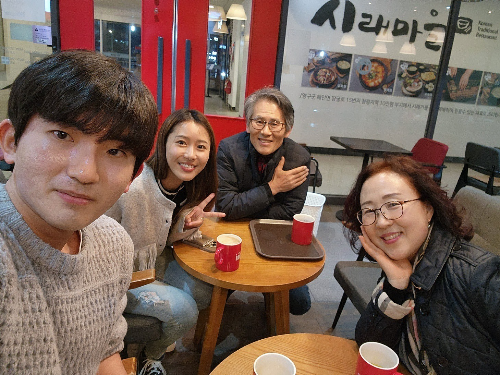
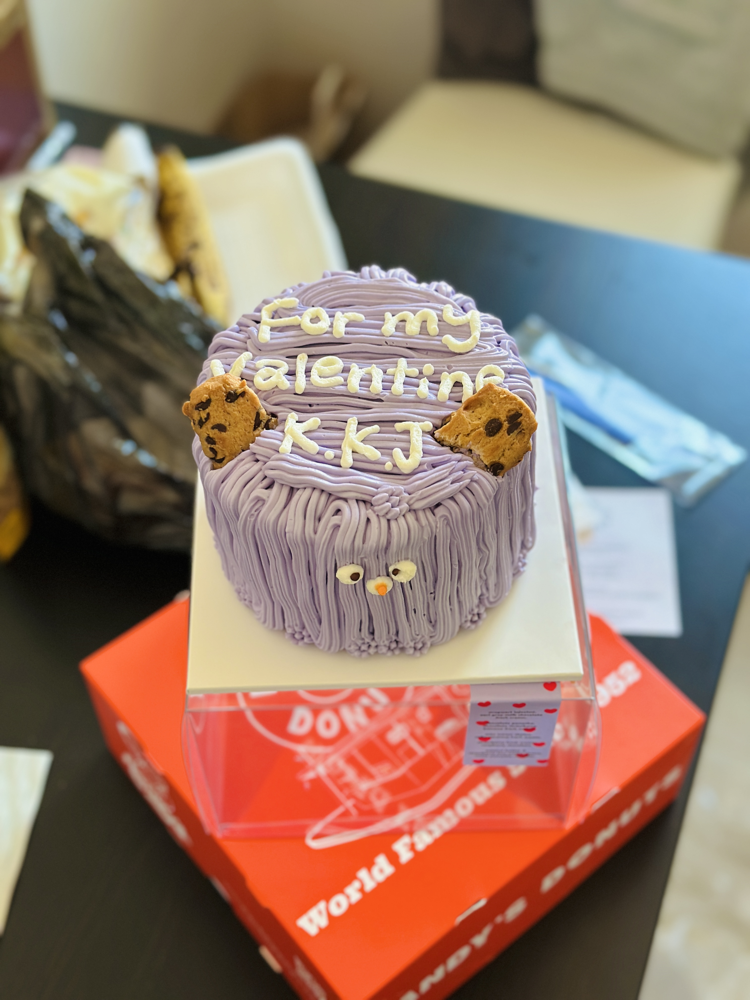
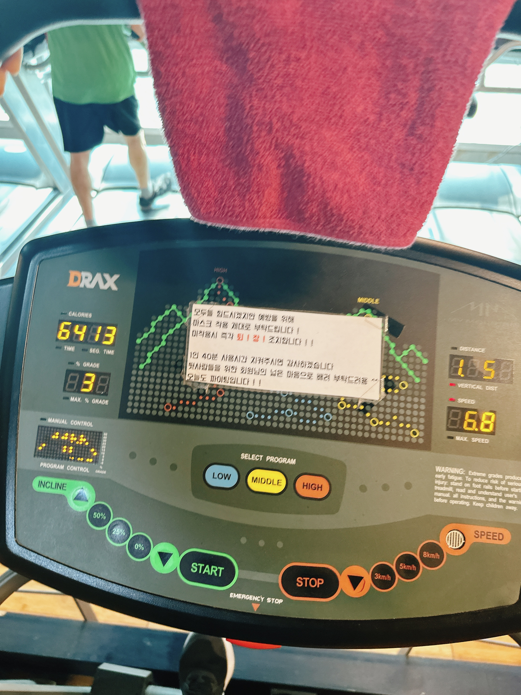

-
朝3時に起きて余裕持って秋田空港行ったのに、まさかの買う便を間違えていて...出発50分前に荷物預けて、10分前に保安検査抜けた泣
マジでドジすぎるしこういうの何回目なんでしょうか。気を取り直して機内食、めっちゃ日本食笑
でも諦めかけてたから乗れて本当によかった。ギョンちゃんが病院行くとかで迎えにきてくれないと思って拗ねてたけど、迎えにきてくれてありがとう♡
-
夕食はチキンを頼んだ！この餅の串も美味しかった。やはり韓国チキンしか勝たん。
-
小腹が減って焼き芋を探し求めて外に出たけど焼き芋売ってるおじさんいなくて、パン屋さんでデザートを購入。呪怨を見たね。
-
顔の乾燥がやばかった泣
日中は明洞のオリヤンに行ってパックとか欲しかったもののショッピング。めっちゃ緊張しながらお父さんとその彼女さんとの夕食会場へ。緊張してたけど料理は美味しくてお腹いっぱいになった、これ普通の量でもう一回食べたい笑
-

カフェに移動！あとで調べて知ったけど、お父さんの彼女さんからはドラマで有名なコスメと、CAさんも愛用してるとかいうミストを頂いた...もったいなくて今もまだ開けてない笑
お父さんもpapago使って色々話しかけてくれて嬉しかったし楽しかったよ！
-
二人して12時とかに起きて、出前のジャジャンミョン食べた！近所のマッサージ屋さんを予約してもらって行ったけど、結構痛くて涙出そうになるの我慢してた笑
でもちゃんと体軽くなった！韓国の31(Baskin Robbinsね)に初めて入って日本ポッピングシャワーに似たようなメニューにしたけど、韓国のやつの方が美味しかった！
-
行きたいって伝えてたカンジャンケジャンのお店へ！めちゃ混んでると思いきや空いててよかった、ギョンちゃん「おいしい？」笑
身がたっぷりで美味しかったー、プリクラ撮って、ギョンちゃんが好きそうな小物屋さんで扇子買ってもらって、ドーナツも買って帰路へ。ギョンちゃんなんでプリクラで変顔してくれなかったの！！
-
近所のe-martで果物とお土産と飲み物、破産するんじゃないかってくらいたくさん買ったし、家まで運ぶの大変だったね笑
-

バレンタインは一緒にいられないからケーキを予約していました〜。一人で望遠に行ったけど、学生や小さい子達が外で遊んでて一足先に春休みを感じた。なんか喧嘩したけどケーキに罪はないので載せとく！
-
呪怨2を見てゴロゴロして、ギョンちゃんの包皮炎がひどいので泌尿器科へ寄ってから狎鴎亭へ笑 街は六本木と渋谷が混ざったような雰囲気？料理も美味しかった！
-

インスタで見て絶対食べたいと思ってたユッケ！肉もユッケもめっちゃ美味しかった〜連れて行ってくれてありがとう！
-
無性にシェイクシャックのポテトが食べたくて、江南へ！朝起きるの遅すぎてこの時点でもう14時半すぎてた笑
-

タンバリンズのハンドクリームが欲しくて、お店を探してもらったら聖水だった！お店の作りが上がコンクリートで、地下が店舗になってるのオシャレだった〜。原宿の裏道みたいな感じで、オシャレなお店いっぱいあったのになぜか写真を撮っていない。
多分顔のコンディションが悪かったんだと思う。
-
聖水を散歩していたら目的のチュロスのお店についた！お店外装も内装もめっちゃ可愛かった〜。
-
長くて太いチュロス！色んな味あったし、ここ美味しかったからまた行きたいな〜ギョンちゃんチュロス好きだよね？
-
バスに乗って移動して、プリンのお店へ！歩いてても気になるオシャレなカフェしかない所だったな、甘いものは別腹だからいくらでも食べれる。
-
帰ってきてついにギョンちゃんおすすめのチキンを頼んでもらった...!めっちゃ美味しかった！insidiousっていうホラーも、日本語と韓国語の字幕両方出せるようにして見たよね、面白かったし。ギョンちゃん天才。
-
昼ごはん食べて腹ごなしにジム行くことにして、行ってみたら休みだったね笑 梨を切ってる私を不安げに見つめるギョンちゃんが面白かったけど、梨くらい切れます笑
モンスターはマートで見つけた、日本には売ってないノンシュガーのやつ！
-
Netflix見て、明洞のオリヤン2回目行ったら混みすぎてて笑 初めて会った日に行った東大門のプルコギ、今回は緊張しないで3人前ペロリと食べられました！連休だったし日本人多かったね。
-
おばさん、おじさん、いとこちゃんにうなぎをご馳走になった。うなぎめっちゃ美味しくてたくさん食べちゃった。人見知りだし韓国語できないしですごいもどかしかった泣
-
どんぐりのおかずと、チャプチェもあったし、頼んでもらったテンジャンチゲも素麺？も全部美味しかった！いとこいて羨ましい。
-
夏に一回行ったstarfieldへ。目的はチムジルバンだったけど、うなぎのお店で酔いすぎて、酔い覚ましにお店を見て回った〜crocsの韓国っぽいかわいい飾りも買えたしgood。オシャレなカフェで休憩。
-
ギョンちゃんはペイントされたconverseが欲しかったみたいだけど、私はこのブランドの服が欲しい笑 メモ。また買い物行こうね。
-
ようやくお目当てのチムジルバンへ！サウナ苦手だけどyoutubeよく見てるから一度行ってみたかった！羊巻きのタオルできて嬉しかったし、卵めっちゃ美味しかった、あれ普通に売ってるなら食べたい。
-
外は激寒だったけど勇気を出して足湯へ笑 混んでたけど湯船もたくさんあってゆっくりできて綺麗でよかった。
-
昼ごはん食べすぎたのかお腹が空かなくて、家に帰ってうどん作ってもらった。美味しくてもっと食べたかったけど我慢した笑
-

早起きしたわけじゃないのにジムへ笑 次韓国に行った時は、ちゃんと筋トレもしたい一緒に！お昼は近所のキンパを持ち帰って、やっぱり美味しかった。
-
金浦まで送ってもらった！もう解決したけど、この時は色々思うことがあってろくに話もせずに泣いちゃった笑
-
帰りの機内食はちゃんとビビンバが出た笑 機内で観てたTunnel、残り10分の所で着陸しちゃって、続きが気になってしょうがないから次もJinAirで行くしかないのかな？
-
金浦→羽田は初めてだったけど、一番楽だ〜。羽田着いた後の富士山。
-
後日談。前日から頭痛くて喉も痛くて咳も出て寒気するからまさかと思って検査したらインフルエンザだったという笑 どこでもらったのかは正直わからん。もちろん隠して働きました！！